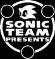
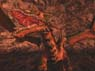
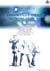

| 『PHANTASY STAR ONLINE』 |


| タイトル | 『ファンタシースター オンライン』 |
|---|---|
| ジャンル | ネットワークＲＰＧ |
| プレイ人数 | １-４人用（ネットワーク対応） |
| 発売予定日 | 2000年 |
| 希望小売価格 | 未定 |
“英雄は、ひとりじゃない。”
You're not the only hero.
■ 西暦２０００年、セガの代表的ＲＰＧ『ファンタシースター』■
がソニックチームの手でついに甦る！
ネットワークの企画を立ち上げた際、
まず最初にコミュニケーション部分及び、
遊びの検証を行った。
そういった遊びを構築した後に、
「このゲームで表現しようとしている“遊び”に
適合した世界観は、どういったモノが良いのだろう？」
と考えていたところ
「『ファンターシースター』の世界観が最適なのでは？」
という話が持ち上がった。
その時、『ファンタシースター』最新作が始動した。
過去の『ファンタシースター』シリーズで目指しながらも
実現しえなかった“リアルな３Ｄ世界”での大冒険。
例えば、その世界を旅するプレイヤーが感じる緊張感や驚き、
そして、プレイヤーの前に壁を突き破り登場するドラゴンなどが、
当時のセガの８ビットゲームマシン『セガ・マーク３』から
数えて３世代目の『ドリームキャスト』で
ようやく実現できるようになったのだ。
| SAMPLE (112*80 Mono) |
| [NEW] TRAILER - "TGS 2000 Spring" Ver. - | |
|---|---|
| 圧縮 | MPEG：フルカラー |
| フレーム数 | 30フレーム/秒 |
| 音質 | 16bit 22kHz Stereo |
| サイズ | 320*240（6.2MB） |
| DOWNLOAD | |
（※MOVIEは『Dreem Passport』ではご覧になれません）
|
 “image” |
 [NEW]“character” |
| ｜ Presented By SONIC TEAM 2000 ｜ |